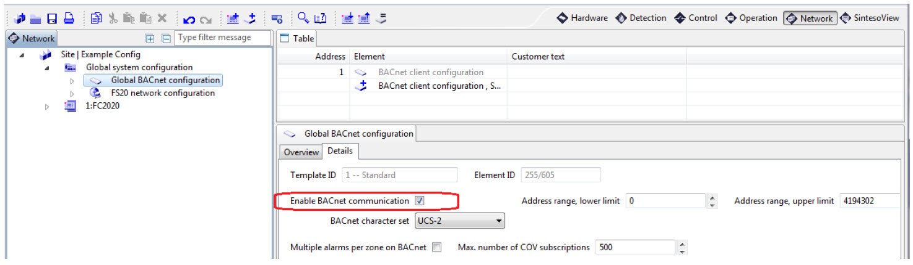
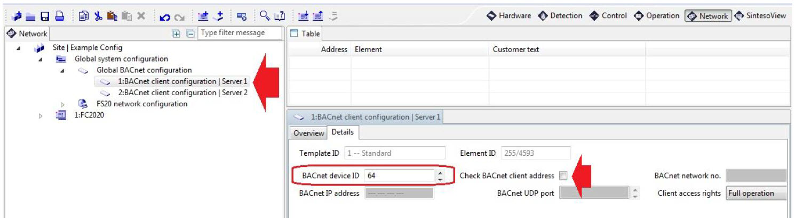

Export the FS20 SiB-X Metafile
- In the panel configuration (FXS2002 tool):
- In Global system configuration > Global BACnet configuration, select the Network > Details tab and select the Enable BACnet communication check box.

- Under Global BACnet configuration, create the BACnet client that will enable Desigo CC in the Details tab of the BACnet client configuration, choose the BACnet device ID to specify in the driver. Do not enable Check BACnet client address.

- Export the SiB-X metafile from the FXS2002 tool. The SiB-X metafile is an XML file containing the complete internal structure of one or more fire control panels.
For more information, refer to the FS20 configuration documentation.